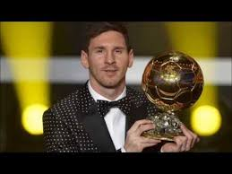

Messi World Records
- Only player in history to score 40+ club goals in 8 consecutive seasons
- Only player in history to score 40+ club goals in 7 consecutive seasons
- Most FIFA Ballon d'Or awards: 5
- Most appearances in the FIFPro World XI: 9 times (2007-2015) (shared with Cristiano Ronaldo)
- Most goals scored at the Club World Cup: 5 goals (shared with Luis Suarez and Delgado)
- Only player to score in 6 different club competitions twice: 2011 and 2015
- Most appearances in the top 3 candidates for the Ballon d'Or: 9 times (2007-2015)
- Guinness World Records title for the most official goals in a calendar year: 91 goals (2012)
- Most goals in a calendar year (including club friendlies): 96 goals (2012)
- Most international goals in a year (club and national team): 25 goals (2012) (shared with Vivian Woodward & Cristiano Ronaldo)
- Most consecutive league matches scored in: 21 matches (33 goals)
- First footballer ever to score consecutively against all teams in a professional league
- Youngest player to win 3 Ballon d'Or awards: 24 years, 6 months and 17 days.
- Most FIFA Club World Cup Golden Balls: 2 (2009, 2011)
- Only footballer to score 60+ goals in all competitions in 2 consecutive seasons (2011/12 and 2012/13)
Messi European Records
- Most goals scored against a single opponent in the Champions League 9 goals against Arsenal
- Fastest player ever to reach 300 goals in Europe's top 5 leagues (334 games)
- Youngest player to reach 100 appearances in the Champions League
- Youngest player ever to score 400+ goals for a single European club (27 years and 300 days)
- Most goals against the same club in the UEFA Champions League: 8 goals against Milan (Shared with Luiz Adriano against BATE)
- Most league goals scored in a season: 50 goals
- Most goals scored in a season (club): 73 goals
- Most goals scored in a year (club): 79 goals
- Most European Cup top scorer awards: 5
- Most hat-tricks in UEFA Champions League: 7 hat-tricks (shared with Cristiano Ronaldo)
- Highest scorer in a UEFA Champions League game: 5 goals (shared with Luiz Adriano)
- Only player to score in 23 different cities in the European Cup
- Only player to finish Champions League top scorer in 4 consecutive seasons (2008/09 - 2011/12)
- Most UEFA Best Player Awards: 2
Messi Spanish Records
- Most goals scored in La Liga El Cl?sico matches: 16 goals
- Most goals scored in El Cl?sico matches: 23 goals
- Only player in La Liga history to score 25+ goals in 8 consecutive seasons
- Only player in La Liga history to score 20+ goals in 9 consecutive seasons
- Only player in La Liga history to score 20+ goals in 8 consecutive seasons
- Only player in La Liga history to score 2+ hat-tricks in 7 consecutive seasons
- Most trophies won in Spanish football: 26 trophies (shared with Iniesta)
- Only player to score in 5 Spanish Super Cup editions: 2009, 2010, 2011, 2012, 2015
- Most goals in Spanish Super Cup Games: 11 goals
- Most away goals scored in La Liga history
- Leading goalscorer over a season in home games: 46 goals (in 2011/12)
- Leading goalscorer over a season in home league games: 35 goals (in 2011/12)
- Leading goalscorer over a season in away league games: 24 goals (in 2012/13)
- Leading goalscorer in the second half of a league season: 28 goals (in 2011/12)
- Most opponents scored against in a single season: 19 (2012/13) (Shared with Cristiano Ronaldo and Ronaldo)
- Most goals scored in La Liga in a season: 50 goals in 2011/12
- Most goals scored in La Liga in a calendar year: 59 goals in 2012
- Most La Liga hat-tricks in a season: 8 hat-tricks (shared with Cristiano Ronaldo)
- Most league matches scored in in a single season: 27 games (2012/13) (Shared with Cristiano Ronaldo)
- Most home league matches scored in in a single season: 16 games (in 2011/12)
- Most away league matches scored in in a single season: 15 games (in 2012/13)
- Youngest player to score 200 La Liga goals: 25 years
- Most consecutive La Liga matches scored in: 21 matches, 33 goals (2012/13)
- Most consecutive away league matches scored in: 13 matches, 20 goals (2012/13)
- Most hat-tricks in El Cl?sico matches: 2 hat-tricks
- First footballer to score more than 25 goals in five consecutive La Liga seasons (shared with Cristiano Ronaldo)
- First footballer to score more than 25 goals in six consecutive La Liga seasons (shared with Cristiano Ronaldo)
- Most assists in La Liga: 135 assists
- All time highest goalscorer in La Liga: 345 goals
- Youngest player to reach 250 league goals
- First player to score 40+ goals in 3 La Liga seasons (shared with Cristiano Ronaldo)
- Best goalscoring ratio in a La Liga season (at least 20 games played): 1.44 (46 goals in 32 games in 2012/13)
Messi Barcelona Records
- All time Barcelona top scorer in all games: 530 goals
- All time Barcelona top scorer in official competitions: 502 goals
- Barcelona top scorer in La Liga: 345 goals
- Barcelona top scorer in European competitions: 97 goals
- Barcelona top scorer in international competitions: 99 goals
- Most hat-tricks in official competitions for Barcelona: 37 hat-tricks
- Most hat-tricks in La Liga for Barcelona: 26 hat-tricks
- Most hat-tricks scored for Barcelona in a single La Liga season: 8 hat-tricks
- Most goals scored in a single Champions League season: 14 goals (2011/12)
- Most goals scored in Derbi Barcelon? (Catalan derby): 12 goals
- First Barcelona player to be La Liga top scorer 3 times
- Most Champions League trophies: 3 (shared with Valdes, Xavi, Puyol & Iniesta)
- One of 2 players to have scored in 6 different official competitions in one season
(Copa del Rey, La Liga, UEFA Champions League, Spanish Super Cup, UEFA Super Cup and FIFA World Club Cup, completed on 4 January 2012) (shared with Pedro)
- Only player to have scored and assisted in 6 different official competitions in one<>br season (Copa del Rey, La Liga, UEFA Champions League, Spanish Super Cup, UEFA Super Cup and FIFA World Club Cup, completed on 12 January 2012)
- The first Barcelona player to surpass 30 league goals in 2 [consecutive] La Liga seasons
- The first Barcelona player to surpass 30 league goals in 3 [consecutive] La Liga seasons
- The first Barcelona player to surpass 30 league goals in 4 [consecutive] La Liga seasons
- The first Barcelona player to win 2 European Golden Shoes
- The first Barcelona player to win 3 European Golden Shoes
- The first Barcelona player to surpass 50 goals in a season
- The first Barcelona player to surpass 50 goals in 2 seasons (did it consecutively)
- The first Barcelona player to surpass 50 goals in 3 seasons (did it consecutively)
- The first Barcelona player to surpass 50 goals in 4 seasons
Messi Argentina Records
- First Argentina player to score against the other 9 CONEMBOL countries
- Most goals scored in friendlies: 24 goals
- Most goals scored in one FIFA World Cup qualification: 10 goals
- Most goals scored in a year (national team): 12 goals (2012) (shared with Gabriel Batistuta)
- Youngest Argentina player to have scored at the FIFA World Cup Finals): 18 years and 357 days old in 2006 against Serbia and Montenegro
- Youngest player to have reached 100 caps in CONMEBOL history (27 years, 361 days old)